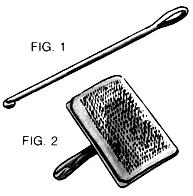
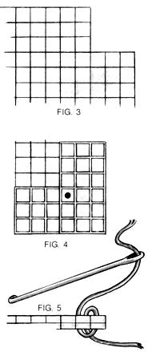
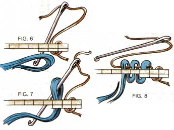
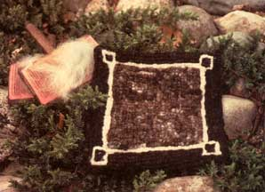
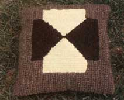
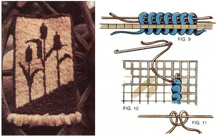
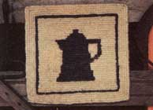

For beautiful wall hangings and cushions, and luxurious woolen rugs you'll love underfoot, try . . .
Australia, home of so many curious and unusual creatures, is also the -home of an interesting variation on the craft of locker hooking. Similar in some respects to rug hooking, locker hooking involves pulling yarn through a rug canvas in loops that are then "locked" into place with a hidden strand of wool. Although it's hardly a byword in most craft circles, locker hooking has been with us for quite some time. In the 1920's, British craftswomen commonly employed the art to make rugs, using heavy, six-ply wool yarn. In the 1940's, Americans followed suit; but, perhaps because of the high cost of such yarn, the craft never achieved great popularity here. Now, however, thanks to the artistic sensibility and ingenuity of a craftswoman Down Under, we may see a renewal of interest.
A BIT OF HISTORY
The Aussie variation consists of a small, but very significant, change in the type of wool used, rather than any alteration of the basic procedure. This change came about when Australian Brian Benson, on tour in Ireland in 1972, saw demonstrations of locker hooking, became fascinated by the craft, and took several hooks home to his mother. A well-known fiber artist, Patricia Benson quickly mastered the craft and completed a handsome rug of heavy, handspun yarn. The piece commanded a great deal of attention when displayed; but Patricia quickly realized that if locker hooking was to become popular, something would have to be found that could be substituted for the heavy yarn required. Commercially prepared six-ply wool twist was expensive, and few people had the time or inclination to spin their own. So Pat began using unspun, freshly sheared wool . . . and Australian locker hooking was born.
Patricia Benson discovered that lengths of combed wool, forger-thick but unspun, could be hooked through the holes of canvas and held in place with a strand of spun yarn. The resulting rugs were beautifully soft and springy underfoot, and they wore well, too. The craft was enthusiastically received in Australia, where sheep breeding and the production of wool are major industries.
In 1980, Marj Boyes-teacher of, and crusader for, locker hooking-came to the United States and introduced Benson's technique. Here was a chance for American crafts people to work with unprocessed wool without having to invest in the lengthy training and expensive equipment required to master spinning and weaving. In fact, wool in any of a number of stages of finishing can be used, starting with the freshly sheared material right on through spun yarn twist . . . for while Australian locker hooking introduced the idea of using unspun wool, the original European craft employed finished fibers.
WHAT'S NEEDED?
To try your hand at locker hooking, you'll need a locker hook, locker cord or yarn, rug canvas, a yarn needle, wool, and-if raw wool is to be used-a metal comb or wire-bristled cards
. The locker hook (see Fig. 1) resembles a rug hook or heavy crochet hook with a large eye opposite the hook end. Like a traditional rug hook, it has to be fairly deep to accommodate the thick fibers used. If locker hooks aren't available at your local craft shop, they can be mail-ordered (see the end of this article for the names and addresses of two suppliers).
Locker yarn should be sturdy cord or yarn just fine enough to be easily threaded through the hook's eye. Four-ply knitting wool is the ideal yarn, but other types can be used successfully. Any color is suitable because the yarn doesn't show . . . but it is best to choose one that blends with the basic color of your hooked piece.
Sized rug canvas without a plastic coating is used for the backing. Plastic-coated canvas is the type most often found in craft outlets, but it cuts the wool fibers and won't soften enough when washed to be compatible with this supple filling. Cotton or cotton-polyester canvas also seems to serve the purpose better than the 100% polyester variety. Be sure to specify which type you need when you buy. Mesh size of three or four squares per inch is suitable.
A yarn needle, easily purchased in any department store or craft outlet, is needed for concealing the locker yarn ends and finish ing the edges of the project if it's intended as a rug or wall hanging.
Wool, when it's kept out of the clutches of factories and protected from destructive chemicals, is a soft, durable, warm, lovely, luxurious fiber. It's neither harsh, nor prickly, nor as allergenic as many people think it is. The wool you use can be freshly sheared, or washed and carded, or in "roving" form (washed, combed, and formed into smooth, long hanks). Of course, freshly sheared wool will be the material of choice for most folks who raise sheep . . . but if you find that wool smells much better on the hoof than in the house, you might want to wash the fleece in a mild detergent or soap, rinsing it well and letting it dry before using it. Don't wring or agitate the wool when washing: It will soak clean. (Wash and rinse the fleece in water of the same temperature.)
A metal pet comb can be used to separate the wool fibers, creating a light, fluffy mass and removing any leftover dirt or vegetable matter that may have remained in the fleece. Metal combs can be purchased at pet shops, department stores, or grocery outlets.
If you can get them, hand cards (Fig. 2) are useful to straighten the fibers, but they can be quite difficult for a novice to use. A few U.S. mills will, for a fee, wash and card raw wool for you. They'll return it as wool batts (large pieces of wool suitable for quilts) or roving, which is available in craft and yarn outlets.
KEEP IT SIMPLE
Australian locker hooking is best suited to simple patterns. If you decide to follow a design, just draw it on the rug canvas with a permanent fiber-tip pen or acrylic paint.
If your project is a pillow or any other article having seams, be sure to leave three or four rows of canvas for your seam allowance. In the case of rugs or wall hangings that require finished borders, you'll want to fold back two or three rows on the edge to make a selvage. I like to clip out the corners with scissors rather than try to hook through four thicknesses of canvas (Fig. 3), and I sew the folded row in place using the zigzag stitch on my sewing machine.
It's easiest to begin hooking in the third row from the edge (Fig. 4). Thread the needle eye of the hook with approximately three feet of locker yarn, and take a piece of wool that's been stretched to about the width of your index finger and tapered at both ends. The wool can be shaped by grasping a clump in both hands and gently but firmly pulling until it reaches the size you need: thick enough to fill the holes in the canvas, but thin enough to pull through easily.
If you're right-handed, you'll work from right to left. First, weave the threaded locker hook in and out of the canvas to anchor the end of the strand in place (when you get more familiar with the technique, you can generally just let it hang loose). Then hold the canvas in front of you, with the hem on the underside, and draw your hook from the bottom to the top through the second hole (Fig. 5), leaving several inches of locker yarn hanging loose on top.
Now, holding the lock of wool in your left hand underneath the canvas, run your hook down through the next hole. Lay the strand of wool over the hook, at a point about one inch from the tapered end. Fold that short end under the hook and back into the main strand of wool, making a loop on the hook (Fig. 6). Draw this loop up through the hole and leave it in place on the hook shaft while you pass the hook down through the next hole, catch another loop of wool, and draw it up through the hole (Fig. 7). In a sense, you're crocheting through the holes of the canvas. Continue in this way until you have three or four loops-or however many you feel comfortable with-on the hook. Then draw the hook and the locker yarn through all the loops, locking them in place on top of the canvas (Fig. 8).
When you run out of wool, simply elongate another piece, tapering the ends as before, and overlap the ends of the old and new pieces (see Fig. 8 again) so that the overlap is no thicker than the rest of the strand. The fibers will interlock . . . but catch up any ends so they don't show and there's no indication of a splice (which could be a weak spot in the finished piece).
When you're about six inches from the end of your strand of locker yarn, pull it out of the hook eye and let it hang from the front of the canvas. Rethread the hook and begin hooking in the next hole as if you'd never run out of yarn; but when you pull the new locker yarn through the hoops, leave a six-inch tail hanging on top of the canvas. This end, like the end of the old yarn, will be woven in later with the yarn needle (Fig. 9).
SQUARE THOSE CORNERS!
Corners and turns require a special technique if they're to be neat and secure. Here's how it works.
When you come to the end of a row, run your hook all the way down through the next hole in line. Pull the locker yarn taut, but not tight, and decide which direction you want to hook in next.
If you want to go at a right angle to your first row, move back one hole-to the one in which you last hooked-and bring the hook all the way up through that hole right next to the loop it already contains. Then begin hooking to the left (Fig. 10). This procedure should be followed whenever you turn a corner, and will create a clean right angle.
If, on the other hand, you'd rather go back alongside your first row, bring the hook up through the next empty hole to the left. Give your piece a quarter turn to the right, and then begin hooking toward the left, beside the first row.
Craftswoman Joan Rough-owner of Fox Hollow Fibres and author of Australian Locker Hooking: A New Approach to a Traditional Craft, which was the primary source for most of this information-explains it thus: "Always bring the hook up one square behind the one in which you'll hook the first loop of any row in a new direction."
When you come to the final stitch, after filling all the holes in the canvas, run the hook down through the next filled hole, drawing the locker yarn after it, and remove the yarn from the eye. Thread the end onto the yarn needle, and weave it in and out the back of the loops and the canvas so that it's firmly anchored and hidden from sight. Trim any ends.
FINISHING UP
Edges can be finished in various ways. When making a pillow, for instance, you can hand-sew a backing or stitch one on with a sewing machine. Other projects can be whipstitched along the edges with raw wool or homespun yarn for a decorative effect. Another attractive alternative is to hook a fringe around the edges, using a lark's head knot (Fig. 11) . . . or, if you leave the outside row of holes empty until last, you can crochet a finished edge, using one stitch per hole.
Locker-hooked items are easy to care for and can be either dry-cleaned or washed. If you choose the second alternative, just remember to soak-not agitate-the pieces and gently squeeze the water through; and be sure that the wash water and rinse water are the same temperature (not one warm, the other cold).
SOURCES AND RESOURCES
Joan Rough's instruction book (mentioned above), which includes one locker hook, can be ordered from Fox Hollow Fibres, Rt. 1, Box 161A, Glasgow, VA 24555 (brochure free with SASE). Kits and materials are available from Hand-Dun Originals, 500 N. Augusta Dr., Augusta, MI 49012 (catalog free with SASE). As of this writing, the prices on locker hooking equipment are as follows: locker hook, $2.50; instruction book with enclosed hook, $6.95; project kits (including wool, locker yarn, book and hook, and canvas), $13.00-$19.00. These prices don't include shipping and handling costs or sales tax.
Crafts people who are skilled at such things might want to try making their own locker hooks from wood, bone, or metal. These should be about 6-1/2" long (shaft diameter about 1/8"), with an eye at least 3/8" long and a hook equivalent to size H or 8 as standard crochet hooks are measured.
As the photographs show, Australian locker hooking lends itself to some handsome designs . . . and lest you think the pieces are fragile, one craftswoman I know has had a locker-hooked rug on the floor of her foyer for five years, and it's still bright, beautiful, and intact.
|
 |
 |
 |
|
 |
 |
 |
|
 |
|
|